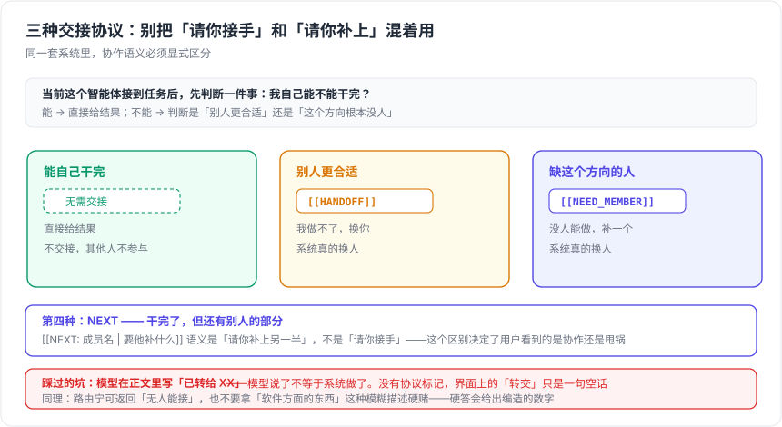
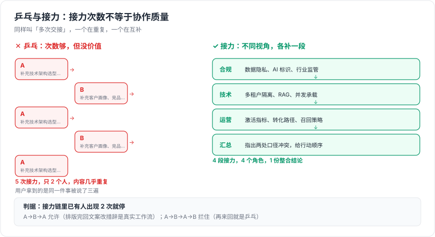
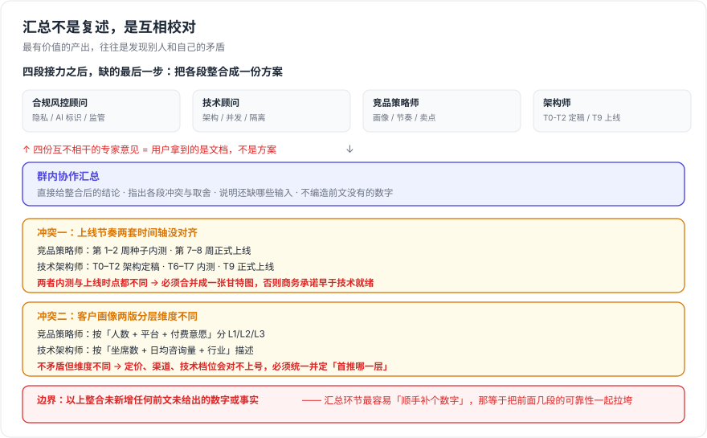

上周我给一个群聊系统加了个「协作接力」功能，目标是让多个智能体一起干活，而不是一个人答完。
第一次跑出来的效果是这样的：
用户：我们要上线一个面向中小商家的智能客服产品，请给出一份完整的上线方案…
🔀 合规风控顾问 接下了这个任务
（合）合规风控顾问：数据隐私风险、AI 生成内容合规、客服行业监管、免责条款…
🔀 技术顾问 接下了这个任务
（技）技术顾问：架构：SaaS 多租户…知识库用向量检索（RAG）+ 规则兜底…
🔀 产品上线策划 接下了这个任务
（产）产品上线策划：定位、套餐、上线节奏、渠道推广、运营转化路径…四个人各写了 1500 字，都很专业。但用户拿到的其实是四份互不相干的文档，不是一份方案——商务节奏和技术里程碑对不上，客户画像的分层口径不一样，全得用户自己拼。
问题出在三个地方。这篇写怎么解的，以及过程中那些看起来像"模型不听话"、其实是设计缺陷的坑。
一、先把三种"交接"分开
一开始我只设计了一种交接：HANDOFF，意思是「我做不了，换人」。
结果很糟。用户看到的场景是：
（AI1）文件已审阅，无数据建模与统计分析内容。
（AI2）文件已审查，确认无数据建模与统计分析相关内容。无需进一步处理。
（AI1）文件审查结果已确认。三个人说了三遍同一句话。这不是协作，这是踢皮球——每个人都把自己不擅长的活推出去，最后活儿落在没人做的地上。
更糟的是，模型会在正文里写「已转给数据分析同事」这种话，但系统里根本没有转交这个动作。模型说了不等于系统做了，这是 AI 系统里最容易被忽略的一类 bug。
所以我把"交接"拆成了三种语义：
| 协议 | 含义 | 什么时候用 | |
|---|---|---|---|
| `[[HANDOFF: 名字 \ | 理由]]` | 我做不了，换人 | 确实超出职责 |
| `[[NEXT: 名字 \ | 补什么]]` | 我这块做完了，请他补 | 自己干完了但还有别的部分 |
[[NEED_MEMBER: 角色]] | 群里没人能做，补一个 | 缺的是方向，不是人 |
关键在于 NEXT 和 HANDOFF 的区别：一个是「请你接手」，一个是「请你补上另一半」。

图 1：同一套系统里，协作语义必须显式区分。「能自己干完」不需要任何协议，而「别人更合适」和「缺这个方向的人」触发的系统动作完全不同。
提示词里要给模型讲清楚这个区别，否则它会把两者混着用：
【关于协作接力】
如果你已经把自己负责的部分做好了，但这个任务还有明显该由别人补的部分
（例如你给的是数据结论，还需要有人补技术可行性），不要自己硬包办。
在最后单独一行输出：
[[NEXT: 成员名 | 要他补充什么，如 补充技术可行性评估]]
系统会把你已经得出的结论一起转给他，由他接着补完。
注意：优先交给不同方向的成员，不要把活原样交回上一位——
两个人来回弹同样的内容对用户没有价值。二、陷阱一：路由在成员描述模糊时会硬选
有次任务迟迟不触发补人，我以为招募逻辑坏了。查了一圈发现，问题在更前面一层。
那个群里两个成员的描述是这样的：
AI1：擅长回答公司内部制度问题…不处理数据分析与图表生成。
AI2：软件方面的东西路由模型看到「软件方面的东西」，判断「AI2 擅长软件方面的东西，可能具备构建预测模型所需的技术能力」，就把活派给了 AI2。
AI2 随即编了一份答案：
特征重要性排序：[特征1, 特征2, 特征3, 特征4, 特征5, 特征6, 特征7, 特征8]从头到尾没有任何环节说过「没人能做」，所以补人逻辑自然无从触发。
这是 AI 系统里一个很典型的失败模式：模型不会说「我不知道」，它会硬答。而硬答比不答更糟——用户会拿这份编造的数字去做决策。
修法是在路由的提示词里明确给一条"不许赌"的规则：
【重要】宁可返回 null，也不要赌。
如果任务需要的能力在成员的描述里找不到明确对应——比如成员只写了
「软件方面的东西」「我的助手」这类模糊描述，而你需要的能力它是否覆盖并不确定——
说明现有成员里没有真正能接这个的人。把 assignee 填 null，
系统会按任务补一位描述清晰的新成员，这比让一个不确定的人硬答可靠得多。改完之后，同一个任务的路由结果是：
→ null
理由：任务需要构建客户流失预测模型并进行特征重要性排序，这需要数据分析、
机器学习建模与特征工程能力，现有成员描述中未提及这些具体技能。然后系统按任务创建了一位「数据分析师」，描述是自动生成的：
擅长数据分析，特征工程，模型构建与特征重要性排序，不涉及软件编程和知识库检索。
顺带一提，这个"不许赌"的规则对普通路由同样有效。宁可显示一句「群里没有擅长这个的人」，也不该让一个描述只有 7 个字的成员去猜。
三、陷阱二：乒乓
我最初在协作链上加了一条规则：不允许把活交给本次接力里已经接过活的人。理由是防止 A→B→A 的无限循环。
结果正常的协作也被拦了。典型的场景是：
文案编辑 → PPT制作者（做视觉排版）
PPT制作者 → 文案编辑（排版完发现某页文案撑不下，回改措辞）这是真实工作流，不是绕圈。排版和文案本来就要来回磨。
去掉限制之后，又冒出另一个问题：模型开始乒乓。
实测一次任务，接力 7 次，乍看很热闹，仔细看每一步的"接力焦点"：
1. 上市方案策划 → 技术顾问 补充技术架构选型、部署与运维可行性…
2. 技术顾问 → 上市方案策划 补充目标客户画像、竞品对比拆解、核心卖点提炼…
3. 上市方案策划 → 技术顾问 补充技术架构选型、大模型/NLU 取舍… ← 和第 1 步几乎一样
4. 技术顾问 → 上市方案策划 补充目标客户画像、竞品对比、卖点提炼… ← 和第 2 步几乎一样
5. 上市方案策划 → 技术顾问 补充技术架构选型…次数是够的，但协作没有价值——两个人重复劳动。
最后用的判据是：接力链里已经有人出现过 2 次，就停止。
A→B→A允许（回环一次是合理补充）A→B→A→B拦住（再来回就是乒乓）
这个判据不完美但够用。真正彻底的解法是让模型自己判断"这次交接是否有实质进展"，但那需要额外一次调用来验证，不划算。

图 2：同样叫「多次交接」，左边是两个人来回弹同一件事，右边是四个角色各补一段。接力次数不等于协作质量。
四、陷阱三：没有收束
这是最影响体感的一个问题，也是最后才意识到的。
即使接力链跑得很顺——4 个角色、4 段专业内容、顺序和标记都对——用户拿到的仍然是几段并列的专家意见。
要变成一份方案，缺一个环节：把各段的结论整合起来，并指出它们之间的冲突。
我加了一个汇总步骤，让它在接力结束后把各方内容合成一段。提示词是这样的：
请把以上各部分整合成一段结论，交给提问的人。
要求：
1. 直接给整合后的结论与行动建议，不要复述各段内容
2. 指出各段之间如果存在冲突或需要取舍的地方
3. 说明还缺哪些输入才能落到可执行
4. 不要编造前面同事没有给出的数字或事实产出比我预期的强。它自己发现了各段之间的矛盾：
上线节奏两套时间轴未对齐。竞品策略师给的是「第1–2周种子内测、第7–8周正式上线」的商务节奏；技术架构师给的是「T0–T2架构定稿、T6–T7内测、T9正式上线」的技术里程碑。两者内测时点和正式上线时点都不一致，必须合并成一张甘特图，否则商务承诺会早于技术就绪。建议以技术里程碑为骨架、商务动作挂靠其上。
客户画像两版口径不一致。竞品策略师按「人数+平台+付费意愿」分 L1/L2/L3；技术架构师按「坐席数+日均咨询量+行业」描述。两版不矛盾但分层维度不同，会导致后续定价、渠道、技术档位（模型路由）对不上号。需要统一为一套分层，并明确「首推哪一层」。
以上整合未新增任何前文未给出的数字或事实；三处取舍和两处缺口均基于各段之间的表述差异归纳，具体决策需对应负责人确认。
这才是"一组人干活"和"一个人答完"的真正差别——互相校对。
最后一条尤其重要。汇总环节最容易出的问题就是"总结时顺手补个数字"，那等于把前面几段的可靠性一起拉垮。提示词里必须明确禁止。

图 3：四段并列的专家意见不等于方案。汇总环节最有价值的产出，往往是发现各段之间的口径冲突，并指出哪些必须先拍板。
五、两个容易忽略的实现细节
上下文要带全部前序，不只是上一位
接力是链式的。如果只把上一位的发言给下一位，第三位就看不到第一位的结论，最后只能各说各话。
正确的做法是把整条链带上：
同事们已经完成的部分：
【合规风控顾问】
我只承接合规风控部分，其余模块给出明确结论或指出缺口…
【技术顾问】
架构：SaaS 多租户，按商家隔离数据；知识库用向量检索（RAG）+ 规则兜底…同时在提示词里约束："可以直接引用同事已经得出的结论，不要推翻重做；如果发现他们的结论有问题，明确指出并说明理由"。
协议标记必须从正文里剥掉
有个 bug 让我困惑了很久：用户的界面上直接出现了 [[NEXT: PPT制作者 | …]] 这样的原始标记。
我先怀疑是正则写错了，单独测了一遍——解析和清理都正常。
真因在别处：最终回复用的是 strip_handoff()，它只清 HANDOFF 和 NEED_MEMBER，不清 NEXT。而链路中间的消息用的是另一个函数 strip_protocol()，它清得全。
同一个语义，两处用了不同的清理函数。改成就统一用 strip_protocol。
这类 bug 的特征很明显：刷新页面就没了（因为刷新后读的是数据库里的干净版本），只在那次实时会话里出现。
六、成本和边界
这类功能不便宜。多人协作意味着：
- 路由 1 次调用
- 每个接力成员 1 次调用
- 汇总 1 次调用
4 人协作 = 6 次调用。如果开 PiAgent 模式（能读写工作区、生成文件），每次还要加几十秒。
所以我加了两个上限：
max_speakers = int((group.settings or {}).get("max_speakers", 4) or 4)
max_speakers = max(2, min(max_speakers, 8)) # 防止无限循环与成本失控默认 4，可在群设置里调到 8。为什么要给这么宽？因为做一份完整方案常要合规 + 技术 + 数据 + 运营四五种视角，3 个不够；但也得有个天花板。
另外「自动补人」也得有上限（默认 3，可配到 8）。理由类似：路由判定"没人能做"时现造一个成员，但无节制地造会让群里塞满一次性角色，而且这些凭空生成的描述会污染后续路由。
七、一句话总结
多 agent 协作的关键不在"让几个模型一起回答"，而在给它们一套明确的协作语法：
- 三种协议区分三种语义（做不了 / 请你补 / 没人能做）
- 路由宁可返回"无人能接"，也不许拿模糊描述硬赌
- 回环一次可以，两次就是乒乓
- 最后必须有人整合，并且明确指出各段之间的冲突
少了任何一环，产出的就是"几份看起来很专业的文档"，而不是一份方案。
---
*这个系列的后续打算写：协作链的上下文传递怎么设计才不丢信息、以及多 agent 系统的成本控制。*